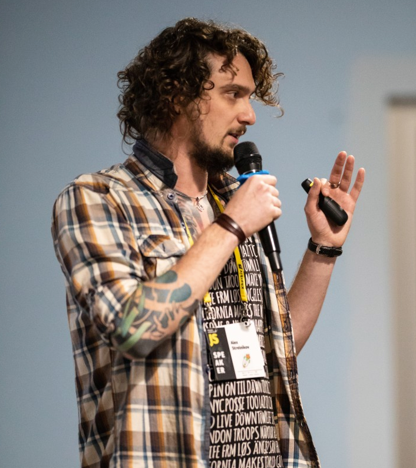

Summary

Hello, my name is Oleksii, and I'm quick-learning frontend developer with a good understanding of all phases of web development life cycle.
Experienced in design and development of web applications. Dedicated to staying current with new technologies and applying them to resolve
diverse client needs.
I adore a TypeScript, Angular(2-latest), all modern UI features like "CSS Grid Layout Module", "FlexibleBox Layout Module",
and so on. I'm sharing knowledge with other developers,
teaching in #Beetroot Academy Ukraine and A-Level Ukraine
for future frontend developers. I made
presentations for #KharkivJSConference, #KharkivFrontendMeetup, #KharkivITCluster and sometimes in IT-companies such as - #Ciklum. Currently, I have one publication on Ukrainian
IT-community portal - dou.ua.
Skills
Technical Skills
- Javascript(ES5, ES2015, ES6)\TypeScript
- Angular2+ ecosystem(CLI, Material...)
- HTML5
- CSS(CSS3, SASS, LESS)
- Data visualisation(D3.js\NvD3)
- RxJS
- NgRx
- Twilio(text\video chats)
- Web3JS
- TradingView Charting Library
- StoryBook
- WebSocket
- Unit testing(JestJS)
- Docker
- REST API
- es/ts lint, Prettier, Husky - GIT hooks
- UI/UX(Bootstrap, Foundation Framework, jQuery)
- Git/SVN/TFS
- npm/yarn
- Debugging tools
- Design patterns
- Responsive web design
- WebStorm
- PhotoShop
- Balsamiq
- XML
Soft Skills
- Communicable
- Team-Lead skills
- Interviewer
- Quick responsiveness
- Team player
- Mentoring skills
- Speaker Skills
- Responsibility
- Ability to explain and teach to young generation
- Self Motivation
Experience
Twelve years experience in frontend development. Survived with IE6, IE7, IE8(it was dark time). Now focus is on JS-frameworks in frontend development. Here You can find projects(companies), that I worked before:
December 2021 - Now
Company name - Dev.Pro Position - Software Engineer, Mentor, Interviewer
Project Description: Data operating system for private market data Allowing owners to credential documents and data, and manage access to private asset data for investors and service providers. Project Details on the DevPro website.
Role: Front-end developer, mentor, interviewer.
Responsibilities: Started work on the project in the feature development team, then moved to the Platform team. Work on system-wide solutions and improvements, highly focused on the application performance and scalability. Organisation of knowledge sharing sessions for fullstack & frontend developers. Interviewing candidates for the project and in the company but for another projects.
Team: 5 Software Engineers, 2 Architectors, Manual QA, Project Manager.
Tools/Technologies: Angular 11, RxJS, NgRx, Material, JestJS, Docker, K8s, TeamCity, Custom UI Components library, StoryBook, Draw.io/PluntUML.
June 2017 - December 2021
Company name - DA-14 Software Development LLC Position - JavaScript\TypeScript(FrontEnd) Developer, Mentor, Interviewer
Project Description: Subcontract employment for the company that works with blockchain & crypto technologies.
Role: Front-end team-lead, mentor, interviewer.
Responsibilities: Work on different projects, finalizing and prepare to production NFT Marketplace project. Continued after another developer, crypto trading project using TradingView Charting Library. Interview candidates(FE - Angular) for this company. Mentoring Angular developers. Participating presales process.
Team: 5 Frontend Developers, 4 Backend Developers(nodeJS), 2 Manual QA, 3 Project Managers.
Tools/Technologies: Angular 11/12, RxJS, Material, Web3JS, WebSocket, TradingView Charting Library, PrimeNG, StoryBook.
Project Description: A social network for companies and investors.
Role: Front-end team-lead.
Responsibilities: Create an application from the scratch. Build scalable project architecture. Implementation of the client-side logic and features. Develop Live-chat based on Twilio service. Implementation of payments via Stripe service with different payment methods and coupons feature. Communications with a customer.
Team: 2 Frontend Developers, 2 Backend Developers(nodeJS), Manual QA, Project Manager.
Tools/Technologies: Angular 11, RxJS, Material, Stripe, Twilio-chat, Quill Editor, NgRx, Auth0.
Project Description: CRM system for a social network.
Role: Front-end team-lead.
Responsibilities: Create a new SPA application from the scratch with all features from the existing old-fashion website.
Team: 2 Frontend Developers, 3 Backend Developers(.NET), Designer, Project Manager.
Tools/Technologies: Angular 10, RxJS, Material, Angular Highcharts, Firebase, SignalR.
Projects Description: Different internal projects. Client's MVP projects fixes and adjustments, etc.
Role: Front-end developer.
Responsibilities: Update an existing application to the latest Angular version. Implementation of new features and
bug fixes. Code refactor and bringing projects to production, etc.
Team: Frontend Developer, Backend Developers, Manual QA, Project Manager.
Tools/Technologies: Angular 5-10, RxJS, NgRx, Bootstrap\Material, WebRTC(peer2peer), Twilio, canvas.
Project Description: Analytical real-time dashboard application that enables managing a distributed network of medical devices that help people with diabetes.
Role: Front-end developer.
Responsibilities: Update existing application based on Angular from version 2 to 8 version. Implementing new features and
client logic. Work with D3(NvD3) charts. Update UI design by new styling, UX improvements. Fixing bugs.
Team: Frontend Developer, 2 Backend Developers, Manual QA, Automation\Performance QA, Project Manager, Product Owner.
Tools/Technologies: Angular 8, NvD3(D3.js), NgRx, Bootstrap, PrimeNG.
Project Description: We record and scorecard your new client calls, so you always know how many calls turn into appointments and exactly what your Front Desk is saying.
Role:Front-end developer.
Responsibilities: Creating new features. Design client side logic. Implementation design from Zeplin. Bugfixes. Refactoring.
Team: 1 frontend developer, 2 backend developers, Project Manager, Scrum master.
Tools/Technologies: Angular 5(Dashboard), Angular 7(Client Application), NgRx, RxJS, ng-bootstrap(Dashboard), ngx-bootstrap(Client Application), AmCharts.
Project Description: Complex internal tool for automotive industry for collaboration between manufacturers and linguistic agencies
Role: Front-end developer.
Responsibilities: Integrating 3rd-party linguistic services, Developing new modules for text analysis, Working on UI consistency, Fixing bugs.
Team: 5 frontend developer, 3(Java) backend developers, Manager/Scrum master.
Tools/Technologies: Angular 5, TreeGrid, Flex GUI (custom module), Quill Rich Text Editor, NgRx, RxJS, Angular Material, ngx-translate, ngx-datatable, angular2-hotkeys, SheetJS.
Project Description: RealScape is a tool that allows you to
create a digital twin of a real-world place or a thing and associate it with the real-world object using geolocation, QR, bar code and image recognition. This way you can attach digital content to that object, share it with others and digitally communicate with the right people and things. RealScape is New Zealand startup based on VR/AR features.
Role: Frontend developer - all frontend features and project architecture implementation. Testing project.
Team: 1 frontend developer, 3(nodeJS) backend developers.
Tools/Technologies: Angular(5), TypeScript, Angular CLI, Angular Material module on UI, mapBox integration.
Project Description: Back office application for a company, which provides people with car transportations (between
client and point of sales). The main purpose of the application is to create new missions (transportations) with amount of information,
assign it to a driver, attach the corresponding documents, appoint works to be done with the car, meetings details with showing the route
on a map. Also, the application is to manage all users, point of sales, handle and manipulate drivers' missions on the calendar.
Role: Javascript Developer. Implementing new features, bug fixing, applying a new template, migration from AngularJS to Angular, communication with client. Testing project
Team: 3 frontend developers, 2(Java) backend developers.
Tools/Technologies: AngularJS, Angular Material, AngularUI, Fullcalendar, Google Maps, GulpJS, Angular(4), Angular CLI,
TypeScript, Bootstrap template.
August 2013 - January 2017
Company name - Ciklum Position - Frontend Developer
Project Description: scanCommerce is a Danish company, that provides eCommerce solutions for online business. Based on self-made CMS with C#/.NET on backend and jQuery library on frontend.
Role: Frontend developer(from 06-2016 Team Lead). Design implementation, creating new features, communications with customers, creating mockups, UI\UX, creating tasks, self management.
Team: 3 frontend developers, 2(C#/.NET) backend developers, designer.
Tools/Technologies: HTML(HTML5), CSS(CSS3, SASS), JavaScript, Gulp, Bower, Photoshop, jQuery, Foundation Framework, WebStorm, VS2013(reSharper).
Project Description: Danaweb is the largest provider of hosted website solutions in Denmark. The primary product is a
complete website with attached CM system and design. Our team worked on internal system for setup and run websites from web
application.
Role: Frontend Developer. Design and development of client logic, designs implementation, creating mockups and design.
Team: Team Lead-Scrum master, 1 Frontend Developer, 8(C#/.NET) Backend Developers, 1 QA, Designer
Tools/Technologies: VS 2013, HTML, CSS, Photoshop, jQuery, Knockout JS, knockout-postbox, ko external template engine.
April 2010 - August 2013
Company name - Holbi Ltd Position - Web Developer
Project Description: Company based on CMS solutions for small and big online business. Company developed own eCommerce
CMS - Trueloaded.
Role: Web developer. All phases of project life cycle from design implementation to server settings, upgrading plugins,
features implementing, setting projects.
Team: 5 Developers, 1 QA, 3 Designers.
Tools/Technologies: PHPStorm, HTML, CSS, XML, Photoshop, jQuery, PHP, MySQL.
Education
Languages
Hobbies
I've played volleyball since childhood. In high school I played in professional volleyball team - "Lokomotiv Kharkiv". I have a lot of medals and
prises.
I play electric guitar, some time ago I played in a rock band. I like ride a bicycle very much, I have my own city bike with electric wheel. Also, I
like
snowboarding
and skim-boarding. I love traveling, I have already been in many countries: Holland, Italy, Portugal, Czech Republic, Germany, Shri Lanka,
Poland,
Bulgaria, Israel, Russia and other.
I love to discover new places and new things. My main objective is to grow personally and professionally to make world better.
You can find me in
Or write to me